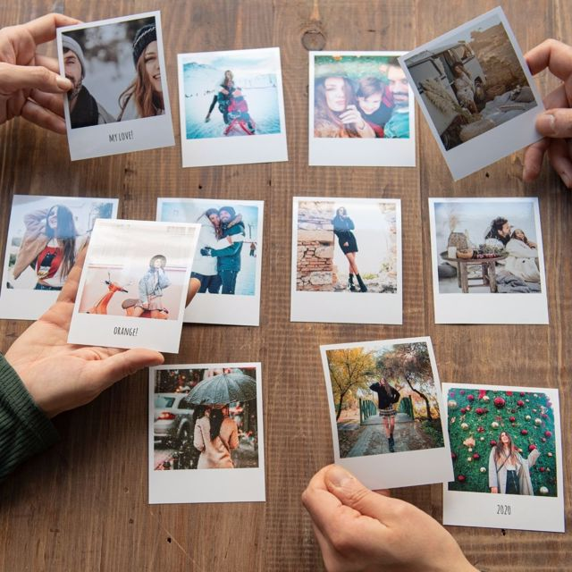
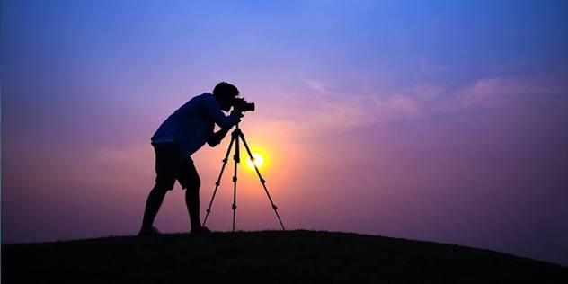

Her sabah işe gitmek için yaklaşık bir saat on beş dakika yolculuk yapıyorum. Uzun süre yolda olmak beni pek yormuyor, aksine bu zamanı verimli geçirmek hoşuma gidiyor. Önceleri yolculuk sırasında sesli kitaplar ve radyo tiyatroları dinliyordum, daha sonra kitap okumaya başladım. Sabahın sessizliğinde birkaç sayfa okumak bile zihnimi dinlendiriyor, günlük telaşlardan uzaklaşmamı sağlıyordu. Ancak kış aylarının gelmesiyle sabahları hava hâlâ karanlık olduğundan kitap okumak zorlaşmaya başladı. Bazen yağmurun sesini dinleyerek, şemsiyemi yanıma alıp yola çıkıyorum. Toprak kokusu ve sabahın sessizliği yolculuğuma ayrı bir huzur katıyor. Her zamanki gibi kitabımı açsam da sayfaları göremeyince okumaktan vazgeçiyorum. Sonra gözlerimi kapatıp düşüncelere dalıyorum. O zaman anlıyorum ki özlediğim yalnızca kitap okumak değil, sabahın o sakin saatlerinde kendime ayırdığım küçük zaman dilimiymiş. Belki de sorun karanlık değil, henüz doğmamış olan güneştir.

İletişim
Email: example@example.com
Telefon: 123-456-7890